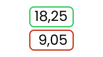

Meetups Near You
Get an email when a Preline Meetup is posted close to my location
Si votre établissement désactive les coeficients, les moyennes par matières ne seront pas correctes
Notifications
Get notified of activity at Preline

Meetups Near You
Get an email when a Preline Meetup is posted close to my location
Notifications
Get notified of activity at Preline